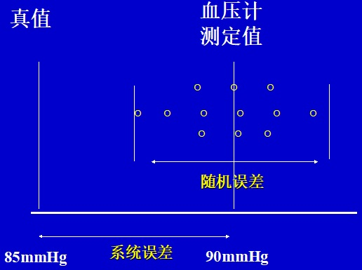

医学统计学 运用概率论、数理统计等原理与方法，研究医学研究中有关数据的搜集、整理、分析的科学。 统计学是收集、分析、解释呈现数据的科学。—《Webster 国际大辞典》
同质(homogeneity)： 指是指观察单位(研究个体)间被研究指标的主要影响因素相同或基本相同。
观察单位(observed unit)： 研究对象的基本单位，可以是一个人、一个地点、一只动物、一份生物样品等。
变异(variation)：
性质相同的事物，如果观察同一指标，各观察单位之间由于存在个体差异，也会使测量结果不同。
它是社会和生物医学中的普遍现象，变异使得实验或观察的结果具有不确定性。
正如龙生九子各有不同、同一个教室里的学生学习成绩为什么各有千秋、采用同样的药物治疗某病患者疗效为什么会有差异一样。
根据研究目确定的同质所有观察单位观察全体，更确切地说，它是同质所有观察单位某项变量值的集合。
有限总体： 个体数有限，常有特定时间、空间范围的限制 举例是郑州市2007年成年人的血压值，此时限定时间地点，目标可以被计数。
无限总体： 个体数是无限的，没有时间、空间限制 举例是高血压患者使用卡托普利后的血压值，因为高血压患者每一年都会增加，故该目标不可被完成计数。
样本： 总体中随机抽取的有代表性的部分观察单位的集合。（编者注：可以理解为是以研究总体为目的、尽量以小样本简化分析设计。）
随机抽取： 按随机化原则获取样本，避免研究者有意或无意给样本带来偏性
样本含量： 又称样本例数、样本大小，即样本包含的观察单位数
总体参数： 用于描述样本特征的指标。用希腊标μ、σ、π表示。
样本统计量 用于描述样本特征的指标。使用正常的x拔、s、p表示。
μ –> x拔（平均数）
σ –> s（标准差）
π –> p（率）
变量 (variable) 总体确定后，对每个观察单位的某项特征进行观测，这种特性能反映观察单位的变异性，称为变量。
资料 (data) 对变量的观测结果称为变量值，由许多变量值构成资料。
| 资料类型 | 举例 |
|---|---|
| 计数资料 | 性别、血型（分别有多少人） |
| 计量资料 | 身高、血细胞计数、收缩压 |
| 等级资料 | 尿WBC（-、±、+）疗效 |
补充知识：
（一）计量资料：分为连续型和离散型。
连续型资料：小数的数字（如身高、体重、眼压）。
离散型资料：只取整数的数字（如年龄，亦有脉搏次数/分；人数/家庭；白细胞计数/L）
（二）计数资料：（记忆数shǔ数shù）表示个数、人数的资料，又称无序分类变量。
做选择题的资料，如性别（男、女）、血型（A、B、AB、O）
（三）等级资料：有序分类变量。有定级标准的资料，如高血压轻度、中度、重度。
建议深入理解“做选择题的资料”
资料的另一种分类
数值变量资料(numerical variable)
分类资料(categorical variable)
四、误差 实际测量值与真值之差，即样本指标与总体指标之差。
一类不恒定的、随机变化的误差，由多种尚无法控制的因素引起。随机误差不可避免，随机误差呈正态分布 通过多次测量获得的均数对真实值进行准确的估计。
一种典型的随机误差是站在体重秤上不可能达到绝对静止，每次在最后读出的数值都围绕着真实的体重上下摆动。
原因：个体变异＋抽样方式
表现：样本统计量与总体参数间的差别
不同样本统计量间的差别
抽样误差是有规律的！
2.系统误差 (systematic error)
其值恒定不变或遵循一定变化规律，产生原因往往是已知或可能掌握的。
原因：抽样不均匀，分配不随机，实验者感觉或操作上的差异，仪器不准确等，可以通过周密的研究设计和严格的技术措施消除。
3.过失误差 (gross error)
在实验过程中，由研究者偶然失误而造成的误差。
仪器失灵，抄错数字，点错小数点，写错单位等，可以通过认真的检查核对予以清除。

在相同条件下，独立地重复n次试验，随机事件A出现 f 次，则称 f/n 为随机事件A出现的频率。
2.概率是随机事件发生可能性大小的度量。
当n逐渐增大时，频率f/n始终在一个常数左右作微小摆动，称该常数为随机事件A的概率，记为： P(A)
只要观察单位数足够多，可将频率作为概率的估计值。
0≤P≤1
P=1 必然事件， P=0 不可能事件。
小概率事件 P≤0.05 表示在一次实验或观察中该事件发生的可能性很小。
小概率原理定义为小概率事件在一次实验或抽样中不可能发生，如果发生就怀疑检验假设的正确性。
研究设计的几个关键问题
随机化原则：随机抽样和随机分配。（如何进行抽样？如何安排干预措施？）
重复原则：确定样本含量。（要达到研究目的至少应观测多少受试者？）
对照原则：在实验组与对照组中，除研究因素外，其它影响实验结果的非研究因素都尽可能相同。（如何排除非研究因素的影响，分离出研究因素对实验结果的效应？）
思考题
为了了解某地20~29岁健康女性血红蛋白的正常值范围，现随机调查了该地2000名20~29岁的健康女性，并对其血红蛋白进行测量，请问本次调查的总体是（ ）
A．该地所有20~29的健康女性 B．该地所有20~29的健康女性的血红蛋白测量值 C．抽取的这2000名20~29岁女性 D．抽取的这2000名20~29岁女性的血红蛋白测量值
总体与样本之间是什么关系？
举例说明什么是计量资料、计数资料、等级资料。
抽样研究的目的是什么？
什么是抽样误差？它的特点是什么？
什么是小概率事件原理？
简述统计工作的步骤。
第二章